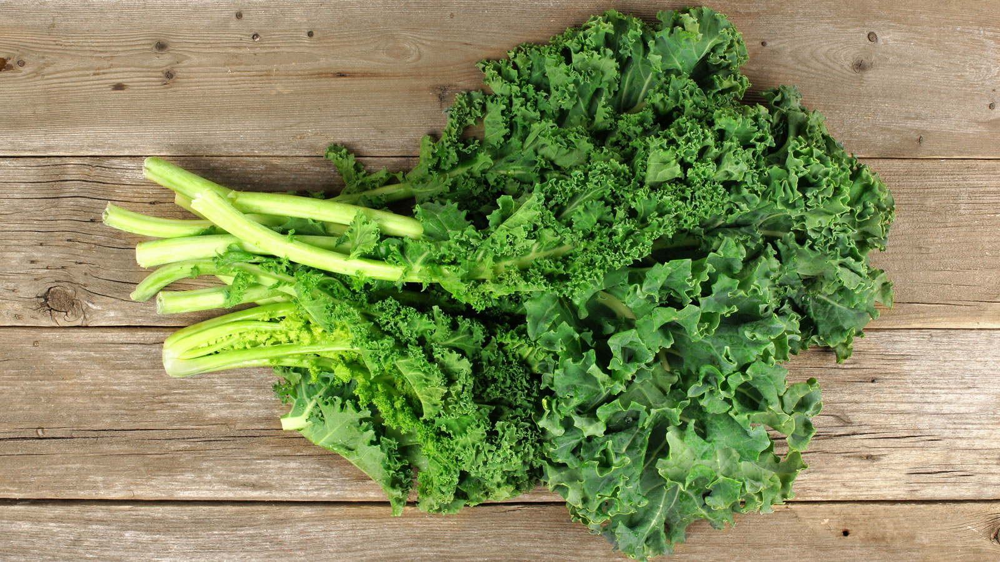
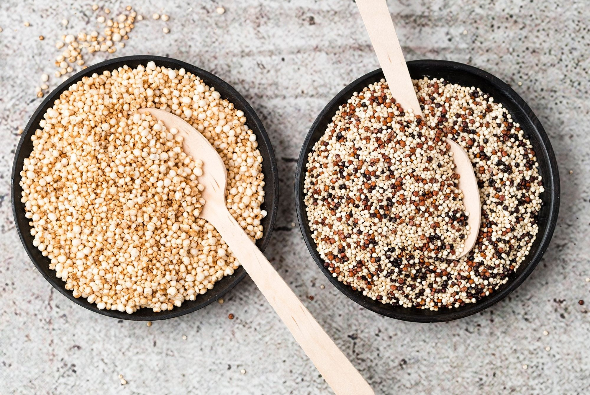

Kale, fuente de calcio
La col verde o rizada, o kale, es una gran fuente de calcio. Si la cocinas al vapor verás que la olla queda manchada de blanco, son restos de calcio. ¿Sabías que si sacas el nervio central y en cocinas sólo las hojas podrás disfrutar de una textura y sabor mejores? La kale es un alimento estrella que recomendamos incluir en cualquier dieta vegetariana equilibrada, y es que, además de calcio, también tiene hierro y muchas vitaminas y otros minerales importantes.

Quinoa, proteina vegetal
La quinoa tiene todos los aminoácidos esenciales y, por tanto, es una fantástica fuente de proteínas vegetales.